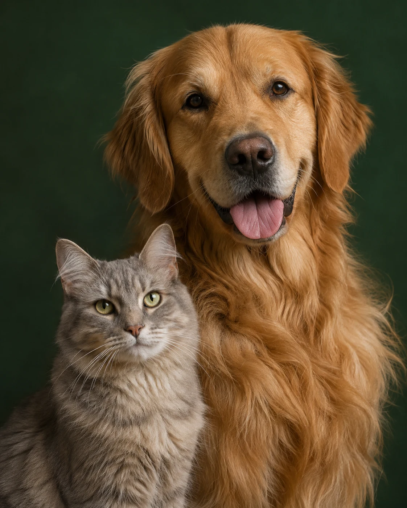
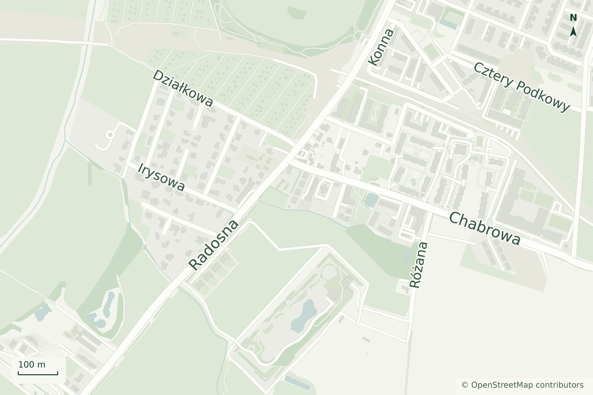

Cztery Łapy i Ty
Veterinary
practice
in Wysoka.
We see dogs and cats for consultations, vaccinations and diagnostic tests. The practice is run by veterinarian Agnieszka Janeczek.
See opening hours below
ul. Chabrowa 2D
52-200 Wysoka


ABOUT THE PRACTICE
Cztery Łapy i Ty
Veterinarian Agnieszka Janeczek runs the practice in Wysoka, near Wrocław. We see dogs and cats of all ages.
You can book a consultation, vaccination or diagnostic test. Please call for details and available appointments.
FOR DOGS AND CATS
Our services
Some of our services are listed below. Please call to ask about prices, other procedures and available appointments.
Consultations and check-ups
Consultations and health checks
Call to arrange an appointment for your dog or cat.
- Consultations for unwell pets
- Follow-up appointments
- Routine health checks
- Blood pressure measurement
Vaccinations and preventive care
Vaccinations for dogs and cats
Check the next vaccination date in your pet’s health record. You can use the form below to add a reminder to your calendar.
- Rabies vaccination
- Vaccinations for dogs: infectious diseases, kennel cough and leptospirosis
- Vaccinations for cats: infectious diseases and feline leukaemia (FeLV)
- Microchipping and tick removal
Diagnostic tests
Laboratory tests, ultrasound and X-rays
Please call to ask about test availability, how to prepare your pet and the cost.
- Blood tests: basic, extended, senior and thyroid panels
- Urine tests
- Stool tests, including testing for Giardia
- FIV/FeLV testing for cats
- Abdominal ultrasound and X-rays
Routine care
Nails, ears and anal glands
Call to book routine care for your dog or cat.
- Nail trimming
- Ear cleaning
- Anal gland care
We accept veterinary care packages from PETHELP.
Ask about an appointment: +48 71 786 78 84FOR YOUR CALENDAR
Vaccination reminder
Enter the vaccination date from your pet’s health record and choose how far in advance you would like a reminder. Save it to your calendar so you remember to call the practice and book an appointment.
These details are for your own use.
The reminder is created in your browser.
Book your pet’s vaccination
Choose a vaccination date
Reminder one week before at 09:00Practice reviews
CHABROWA 2D · WYSOKA
Contact and directions
The practice is at Chabrowa 2D in Wysoka. Please call to arrange an appointment.
+48 71 786 78 84 agajaneczek@gmail.com52-200 Wysoka, Kobierzyce municipality
OUR PRACTICE IN WYSOKA
Opening hours
- Monday–Friday
- 10:00–18:00
- Saturday
- 10:00–12:00
- Sunday
- Closed
Opening hours may vary on public holidays.
Please call if you are unsure.
Our address is Chabrowa 2D. Some online directories still show the previous address: Chabrowa 95BC. There is no barrier gate on the access road.

Chabrowa 2D
Cztery Łapy i Ty
52-200 Wysoka
You are viewing a static map.
The interactive map will connect to Google only if you allow it.